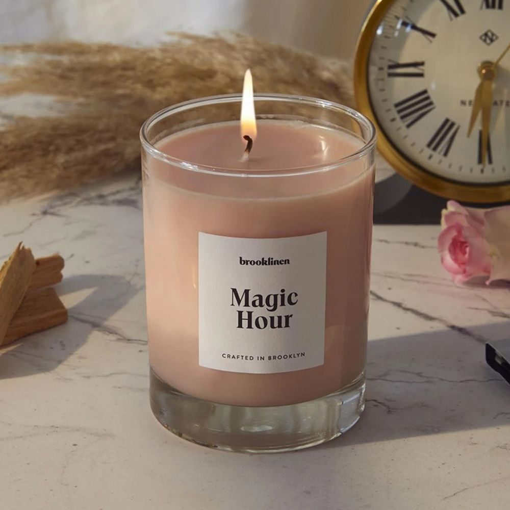
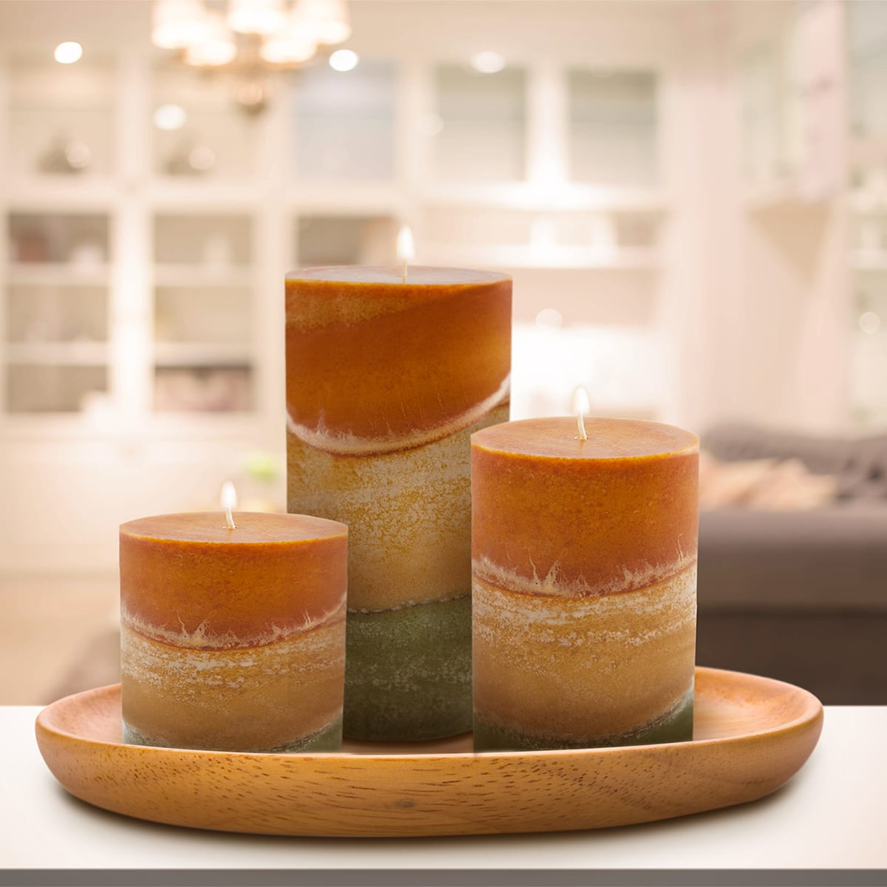

As the fuel (wax) is melted and burned, the candle becomes shorter. Portions of the wick that are not emitting vaporized fuel are consumed in the flame. The incineration of the wick limits the length of the exposed portion of the wick, thus maintaining a constant burning temperature and rate of fuel consumption. Some wicks require regular trimming with scissors (or a specialized wick trimmer), usually to about one-quarter inch (~0.7 cm), to promote slower, steady burning, and also to prevent smoking. Special candle scissors called "snuffers" were produced for this purpose in the 20th century and were often combined with an extinguisher. In modern candles, the wick is constructed so that it curves over as it burns. This ensures that the end of the wick gets oxygen and is then consumed by fire—a self-trimming wick.
These pictures accurately describe what we sell:
 